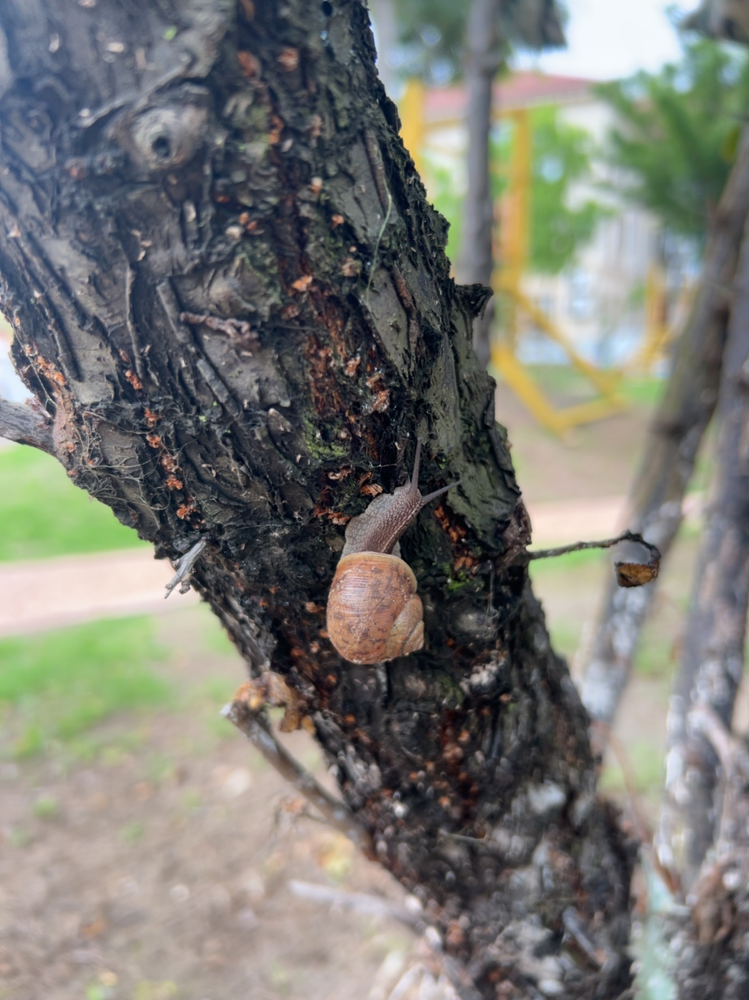
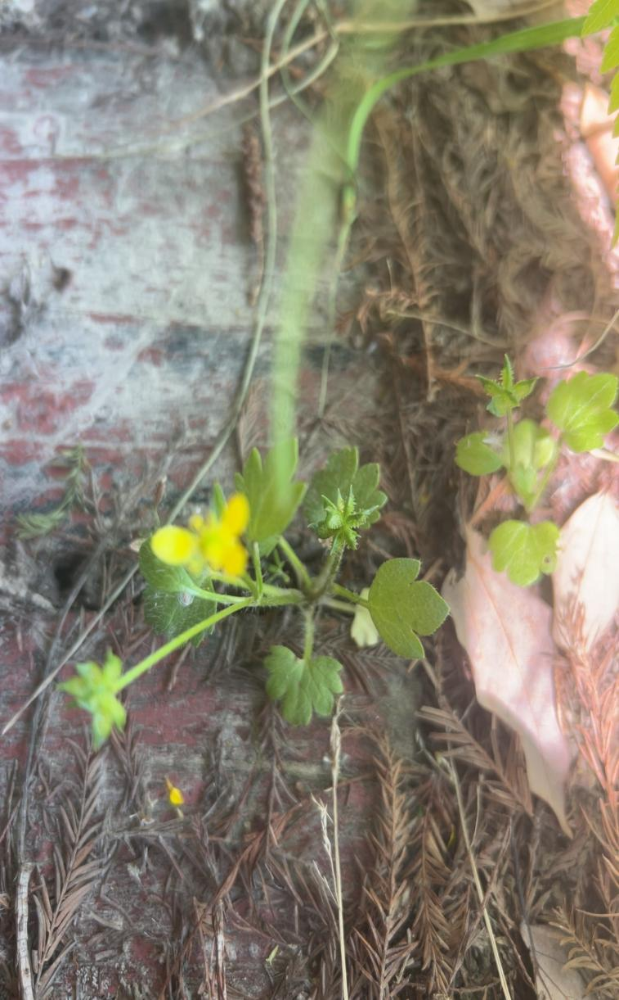

看见微小生命
从好看的花草扩展到叶背小虫、泥土中的蚁卵、路边缓慢移动的蜗牛。
AFFECTIVE EDUCATION IN THE FIELD
让幼儿在真实自然中发现生命、理解他者，并把“喜欢”转化为不打扰、修补、放归与守护。
“军山绿野”五感探究：幼儿亲近自然与生态情感启蒙实践
全国教育科学规划一般项目 BEA230076｜项目负责人：丁锦宏｜幼儿园实践子课题



HOW EMOTION GROWS
儿童决定在哪里停下来，教师跟随其注意。
感受不是终点，而是发现生命处境的线索。
“它会疼吗？如果是我会怎样？”
把喜欢变成不打扰，把心疼变成修补。
用原话、投票和反思回到下一次现场。
“喜欢瓢虫，不一定要把它带回家；
它也想回到自己的草地。”
SEVEN DAYS IN THE FIELD
认识风险边界
害怕有毒植物，也提出“小植物会疼”。
植物有感觉吗
26名幼儿参与，收割争议形成13∶13。
不戳蚁穴
担心蚂蚁无家，也把垃圾送回垃圾桶。
送蜗牛回家
为误踩的蜗牛安葬，把路上蜗牛放回草丛。
理解多个生命
从害怕蟾蜍到寻找保护树与蜘蛛的双赢方法。
为蚂蚁搭家
担心割草毁巢，合作搭建通道和休息区。
喜欢不等于占有
回填蚁巢，放归瓢虫，解开绑树绳索。
观察证据｜不作标准化测量结论
从好看的花草扩展到叶背小虫、泥土中的蚁卵、路边缓慢移动的蜗牛。
不只说“要保护”，还能说明“它会疼、会害怕、会想家”。
寻找既保护树、又善待蜘蛛的温柔办法，而非简单判断好坏。
放归瓢虫、放弃绑树荡秋千，让情感具有约束力。
回填误挖的蚁巢，把垃圾送回垃圾桶，把蜗牛送回草丛。
申报表 · 成果总结 · 匿名证据册 · 84件材料目录｜扫码进入远程证据页